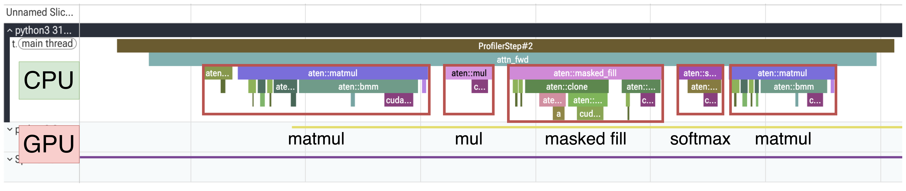
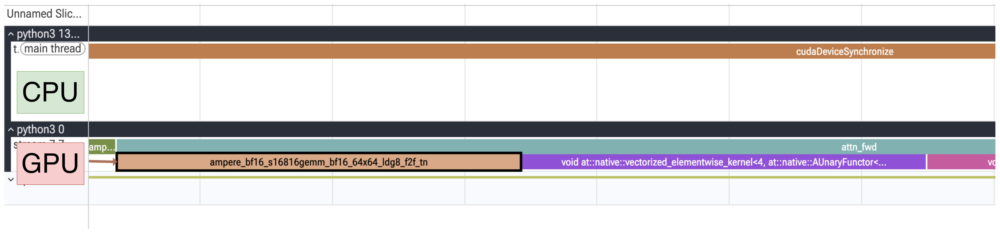
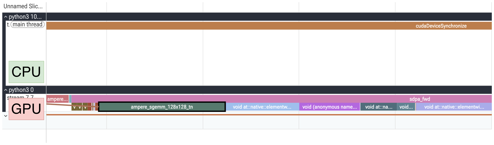
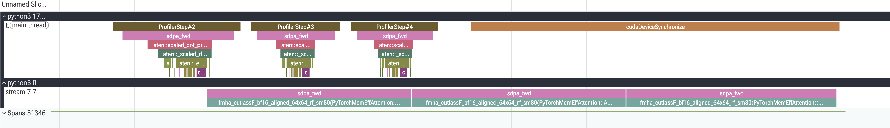
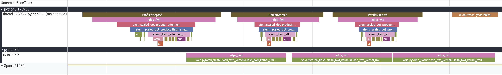
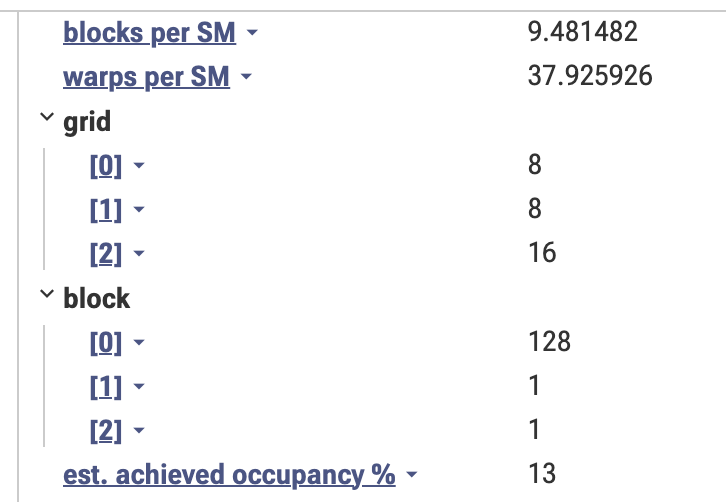
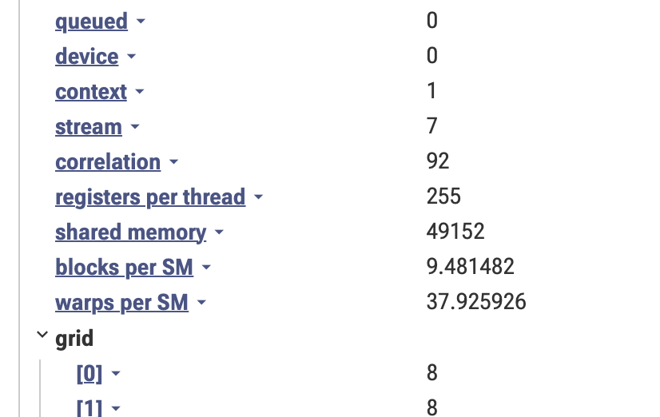
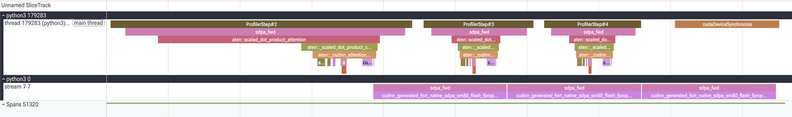
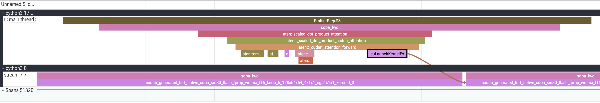
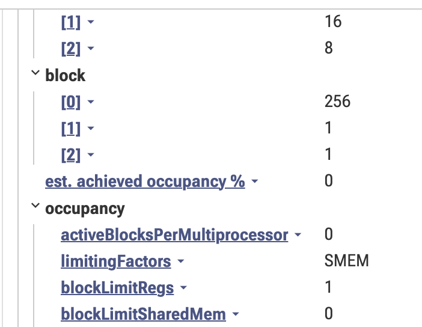

Profiling in PyTorch系列是想让人读profiler trace和表不发怵。第一篇profile了加减乘除基础操作，看了profiler表怎么找热点、trace怎么按时间展开算法。第二篇把乘加裹进torch linear层，再堆几层成MLP，也看了融合和手调kernel。站在Transformer的角度，下一个该profile的基础算法是attention。它的平方复杂度臭名昭著，但有的是trick让它快，目标不是把每个trick讲透，而是看它们在profiler下长什么样。
这是Profiling in PyTorch系列的第三篇：慢慢打磨读profiler trace的技能，再用它来驱动优化。
脚本：04_a_naive_attention.py、04_b_inplace_ops_attention.py、04_c_sdpa_attention.py、04_d_kernels_attention.py，建议开新标签页对照着读，跑在NVIDIA A100-SXM4-80GB上。
Attention玩的是Query、Key、Value三件套，交互可以写成一串步骤：
scores：matmul(q, k.T)scores * scalescores.masked_fill(mask, "-inf")attn：softmax(scores)matmul(attn, v)所以attention其实是一堆基础操作的集合。matmul已经眼熟，剩下的也好认。下面写一个naive attention模块并profile它：
class NaiveCausalAttention(nn.Module):
def __init__(self, head_dim):
super().__init__()
self.scale = 1.0 / math.sqrt(head_dim)
def forward(self, q, k, v, mask):
scores = torch.matmul(q, k.transpose(-2, -1))
scores = scores * self.scale
scores = scores.masked_fill(mask, float("-inf"))
attn = torch.softmax(scores, dim=-1)
out = torch.matmul(attn, v)
return out开trace前老规矩，先猜应该看到什么：
q . k.T）attn . v）uv run 04_a_naive_attention.py
uvx trace-util -f traces/ -b <hf_uname>/traces
图1是profile的CPU道（GPU道先折起来，免得信息过载）。attn_fwd（标注的forward调用）里正好是猜的那几个操作。matmul是老熟人，新操作也好认：
mul：缩放masked_fill：因果masksoftmax：softmax kernel展开GPU道，看实际launch了哪些kernel。
图2是GPU道挨着CPU道。放大单个attn_fwd在GPU道上看（图3），kernel依次是：
五个在预期内，memory copy是多出来的一个，哪来的？线索是PyTorch有in-place操作。普通（out-of-place）方式操作tensor时，PyTorch常先复制一份、在副本上做操作、再返回副本。顺着操作序列看，源头是masked_fill。换成in-place试试？
只改masked_fill为masked_fill_（尾巴下划线是PyTorch的in-place约定），跑同一个脚本：
def forward(self, q, k, v, mask):
# q, k, v: [batch, heads, seq, head_dim]
scores = torch.matmul(q, k.transpose(-2, -1)) # [batch, heads, seq, seq]
scores = torch.mul(scores, self.scale)
- scores = scores.masked_fill(mask, float("-inf"))
+ scores.masked_fill_(mask, float("-inf"))
attn = torch.softmax(scores, dim=-1)
out = torch.matmul(attn, v) # [batch, heads, seq, head_dim]
return outuv run 04_b_inplace_ops_attention.py
uvx trace-util -f traces/ -b <hf_uname>/traces图5的in-place版比图4的普通版，mask步骤里裹的CPU op少得多，好兆头。展开GPU道确认：图6、图7对比，Memcpy kernel彻底没了。一行改动，每次forward少一个kernel。单看不起眼，但它是每个attention操作都有的，transformer大模型每层一次、层数又多，省的量很快加上去。
顺带：out-of-place是PyTorch默认有原因的。算梯度时autograd得记住forward见过的tensor值，很多反向公式要复用。in-place把内存里的值覆盖了，反向就读错数。这里forward跑在torch.no_grad下，无反向、无东西可corrupt，in-place安全。in-place不光省时间（本例），还省内存（少一次复制），对logits这种大tensor很香。
手搓attention还顺手省掉一个Memcpy，好消息是PyTorch团队全代劳了，打包成一个函数：
from torch.nn import functional as F
F.scaled_dot_product_attention(q, k, v, is_causal=True)一行顶掉手写module，is_causal=True连mask都不用手建。值得停一下品品这一行藏了多少。不光藏代码行数，SDPA没有单一实现，它在底下dispatch到几个后端里挑最快的（看dtype、head dim、mask、硬件等）。官方SDPA教程讲了选择逻辑，后端列在torch.nn.attention.SDPBackend枚举里：
from torch.nn.attention import SDPBackend
BACKENDS = {
"math": SDPBackend.MATH,
"flash": SDPBackend.FLASH_ATTENTION,
"efficient": SDPBackend.EFFICIENT_ATTENTION,
"cudnn": SDPBackend.CUDNN_ATTENTION,
}正常SDPA自动选，用torch.nn.attention.sdpa_kernel上下文管理器可以pin死某个后端，脚本里就这么干，一个个profile，看它们在trace里长什么样。
uv run 04_c_sdpa_attention.py --backend math
uvx trace-util -f traces/ -b <hf_uname>/traces开看前先猜：手写attention（matmul、mul、mask、softmax、matmul）换成一行，trace应该更简单更快，kernel更少、CPU dispatch更少，说不定还有融合kernel。先看profiler表：
| 指标 | 看哪里 | Naive in-place | SDPA math |
|---|---|---|---|
*_fwd CUDA time avg | profiler表里*_fwd op的CUDA time avg列 | 1.955 ms | 7.239 ms |
| Self CUDA time total | profiler表底部 | 7.194 ms | 27.279 ms |
第一个surprise：一行版慢3.7倍。
开trace（图9）警铃大作：math后端每次forward launch 20个GPU kernel，手写naive in-place版（图8）才5个，和猜的反着来。弄明白为什么。


第二篇学了把kernel名当指纹读，用上：naive的matmul kernel（图10）带s16816，是bfloat16 Tensor Core matmul的签名（16x8x16 Tensor Core指令），走的快车道；math后端的（图11）是sgemm，经典单精度FP32 matmul，跑在普通CUDA core上。math后端压根不碰Tensor Core：为数值精度把tensor upcast到FP32（输入bf16也一样，搬的数据翻倍），退回慢速CUDA core。
补点背景：SM是GPU的计算单元，每个SM有两种算术单元，CUDA core通用、一次处理几个元素，Tensor Core一条指令乘加一整块小矩阵tile。所以问题很简单：各后端到底走没走快车道？
naive版mask建一次复用，这里传is_causal=True，math后端每次调用现场materialize一个，CPU道上看得见（图12）：aten::ones、aten::tril建 [seq,seq] 下三角；aten::scalar_tensor、aten::fill_ 造 -inf填充值；aten::where转成加性偏置（0或 -inf）。GPU上对应triu_tril_kernel、几个where kernel、一个add_。is_causal这个省心flag没省掉活，只是把活挪到下一层，每次forward从头重建mask。

手写版调的普通aten::softmax，math后端调aten::_safe_softmax，差别又是几个kernel（图13）。全mask的行（全 -inf）会让普通softmax算出exp(-inf)/sum(exp(-inf)) = 0/0 = NaN，_safe_softmax防的就是这个。naive版懒得管，角落case会悄悄吐NaN。

拼起来：math后端是参考实现，把attention老老实实拆成基础ATen op，dtype安全、NaN安全，基本就是手写的naive attention再谨慎一点。这份谨慎正是它极慢的原因。它的活不是快，是永远能跑，所以是完美基线。后面每个后端（flash、efficient、cudnn）都在试图把20个GPU kernel压成一个融合kernel，全程bf16、中间矩阵压根不materialize。
uv run 04_c_sdpa_attention.py --backend efficient
uvx trace-util -f traces/ -b <hf_uname>/traces
math后端一个profiler step launch 20个kernel，efficient后端只launch一个fmha_cutlassF_bf16_aligned_64x64_rf_sm80（图14）。拆解这个kernel名：
fmha（fused multi-head attention）：attention的基础op现在全融进一个opcutlassF：基于CUTLASS（NVIDIA开源的Tensor Core GEMM模板库），F表示forwardbf16_aligned：跑bfloat16，不像math那样upcast到FP3264x64：tile尺寸rf（register file）：工作集放在寄存器，片上最快的存储sm80：为Ampere编译（A100的算力8.0）这就是从Meta的xformers库长出来、上游进PyTorch的memory-efficient attention kernel。人们说的xformers后端，指的就是这个fmha_cutlassF kernel。
uv run 04_c_sdpa_attention.py --backend flash
uvx trace-util -f traces/ -b <hf_uname>/tracesvoid pytorch_flash kernel（图15）是FlashAttention-2（Tri Dao的实现），vendored进PyTorch。先回答该问的问题：为什么单开一个叫flash的后端，它凭什么重要？

回头看math后端，它真正的问题不是20个kernel，是kernel之间递的东西。第一步建完整分数矩阵attn = q.k.T，每个head一个 [seq,seq]。seq 4096时单head 4096×4096 ≈ 1600万个数，先写进HBM（装得下的话），读回来缩放、写回去加mask、读回来softmax，一路折腾。attention的成本大头是与HBM的来回搬运，不是matmul本身。
FlashAttention打的就是这个：不等整个s矩阵算完再归约，按tile走k和v，一路维护running softmax（online softmax技巧），tile by tile累加输出。完整的 [seq,seq] 分数矩阵永远不写HBM，只活在片上。就这一个想法，让整个attention pipeline压成一个融合kernel，全程bf16跑在Tensor Core上。
读profiler footprint的人到这里会懵：flash最快，profiler却报它occupancy很低（图16才13%）。要解释得先有三个定义。GPU kernel本质是一串指令，被很多小执行单元跑，线程管load、加、存回。kernel一次launch很多线程，按block分组管。block调度到SM（GPU的计算单元）上，一个block整待在一个SM，一个SM资源够就能同时住多个block，资源包括寄存器、共享内存、常驻线程/ warp上限。说kernel的occupancy低，意思是每个SM住的warp比理论上限少。

点开flash kernel看footprint（图17）就明白了：每线程寄存器用得多，每block共享内存也大。比如block 128线程、每线程255寄存器，一个block要128×255=32640个寄存器，Ampere SM共65536个寄存器，一次只能住两个这种block。每128线程block有4个warp，两个block才8个常驻warp，上限64，约13% occupancy。flash occupancy低不是没优化好，是每个block故意做得很重，片上资源全花在把attention tile留在片上、 aggressive复用数据、永远不把完整attention矩阵materialize到全局内存。这就是全部意图：高occupancy靠多warp ready来藏延迟，但不让活本身变高效；flash把寄存器和共享内存花在刀刃上。
uv run 04_c_sdpa_attention.py --backend cudnn
uvx trace-util -f traces/ -b <hf_uname>/tracespattern熟了：和flash、efficient一样，cuDNN每次forward也是一个融合的flash风格kernel（图18）。自然要问：flash已经融合了，PyTorch为什么还要再发一个flash后端？答案在谁写kernel、怎么写，trace长得不一样就源于此。
flash和efficient是固定、预编译的kernel，vendored进PyTorch，每次拿同一个二进制。cuDNN是NVIDIA自家深度学习库，它的attention kernel是按手头具体问题生成并调优的，更接近torch.compile的codegen，不像cuBLAS固定二进制。超长的kernel名直接写着：
cudnn_generated_fort_native_sdpa_sm80_flash_fprop_wmma_f16_knob_6_128x64x64_4x1x1_cga1x1x1_kernel0_0这个kernel名可以逐段读：
cudnn_generated：不是预置的二进制，是cuDNN生成的flash_fprop：flash attention风格的前向，与flash后端同属一个家族wmma_f16：走warp级矩阵乘加（WMMA）API，16位浮点管线的Tensor Core路径knob_6：cuDNN从一组预调配置（knob）里挑。形状不同选不同knob，和cuBLAS按形状挑tile变体一个意思128x64x64：它选的tile维度

按问题生成这一条，解释了trace里其他所有看着怪的地方：
_cudnn_attention_forward直接到几个aten::empty分配再进kernel，零aten::transpose（图19、20、21）。flash和efficient各插四个（元数据）转置来reshape tensor，cuDNN直接吃原生[B, H, S, D] 布局，因为生成器按这个布局发kernelcuLaunchKernelEx而非cudaLaunchKernel：全系列其他kernel都走runtime APIcudaLaunchKernel，cuDNN用driver层的扩展launch，带launch属性（图22）cuLaunchKernelEx）launch的occupancy没法像cudaLaunchKernel那样归因，读出来就是0。footprint说真话（图23）：240寄存器 × 256线程 = 61,440个寄存器每block，SM共65,536个，每SM只塞得进一个block（8 warp ≈ 12.5%），和flash一个水平无转置的故事容易让人以为cuDNN是CPU上最省的后端。反了：
| 后端 | CUDA平均时间 | CPU平均时间 |
|---|---|---|
| efficient | 277.9 µs | 117 µs |
| flash | 146.8 µs | 138 µs |
| cudnn | 186.3 µs | 214 µs |
零转置op，cuDNN每次forward在CPU上花约214 µs，比flash（138）或efficient（117）都多。几乎全在aten::scaled_dot_product_attention的self时间（占整轮26%）和_cudnn_attention_forward里。那是cuDNN的运行时引擎每次调用选plan、做准备（knob搜索）的成本。
ATen op变少不等于CPU活变少，是活搬进了库里，profiler只能看到一个又粗又不透明的条。trace突然变干净，活不一定没了，可能只是搬到profiler拆不开的地方。GPU上cuDNN（186.3微秒）落在efficient和flash之间，这个对flash极友好的形状上手写FlashAttention-2险胜。cuDNN常在别的形状赢（head dim更大、seq不同），恰恰因为生成器按问题重调，但重调的代价就是刚才在CPU上付的。
收尾前，一张表复习每个attention变体和它的trace教的那一课。
| 变体 | 改了什么 | 每forward的kernel数 | trace揭穿了什么 |
|---|---|---|---|
| Naive attention | 用基础op手搓attention（matmul、mul、mask、softmax、matmul） | 6 | out-of-placemasked_fill藏了一个Memcpy |
| Naive in-place | masked_fill →masked_fill_ | 5 | 一行改动把Memcpy kernel整个干掉 |
| SDPA math | F.scaled_dot_product_attention锁定math后端 | 20 | 参考实现：FP32跑CUDA core、mask每次重建、_safe_softmax。正确但慢约3.7倍 |
| SDPA efficient | Efficient（xformers）后端 | 1 | 一个融合fmha_cutlassF kernel，全程bf16跑Tensor Core |
| SDPA flash | Flash后端 | 1 | 一个融合pytorch_flash kernel（FlashAttention-2）。最快，尽管13% occupancy看着不对 |
| SDPA cuDNN | cuDNN后端 | 1 | 按问题生成的kernel：无转置、cuLaunchKernelEx，但成本搬到了粗CPU条里 |
如果全系列只带走一个习惯，就是每次trace前重复的那个：先猜，再看。大声说出你预期trace里有什么，打开，凡对不上的就是屏幕上最有意思的东西。三篇里每个真insight，藏着的Memcpy、addmm epilogue、20 kernel的math后端、flash不对劲的occupancy、cuDNN粗CPU条，都来自没对上的猜测。
Profiling不是GPU专家专属的吓人技能，只是凑近看、不停问等一下那是为什么、直到想通的纪律。词汇和反射都有了，自己模型上照做：开trace，先猜，去找对不上的。感谢读完Profiling in PyTorch系列，去profile点东西吧。感谢Noe Flandre对早期草稿的评审。博客用LLM润色过，不等于放了个agent在后台代写，团队里有人不是英语母语，LLM能帮忙改改语法、把句子说得不那么吓人。
参考：https://huggingface.co/blog/torch-attention-profile